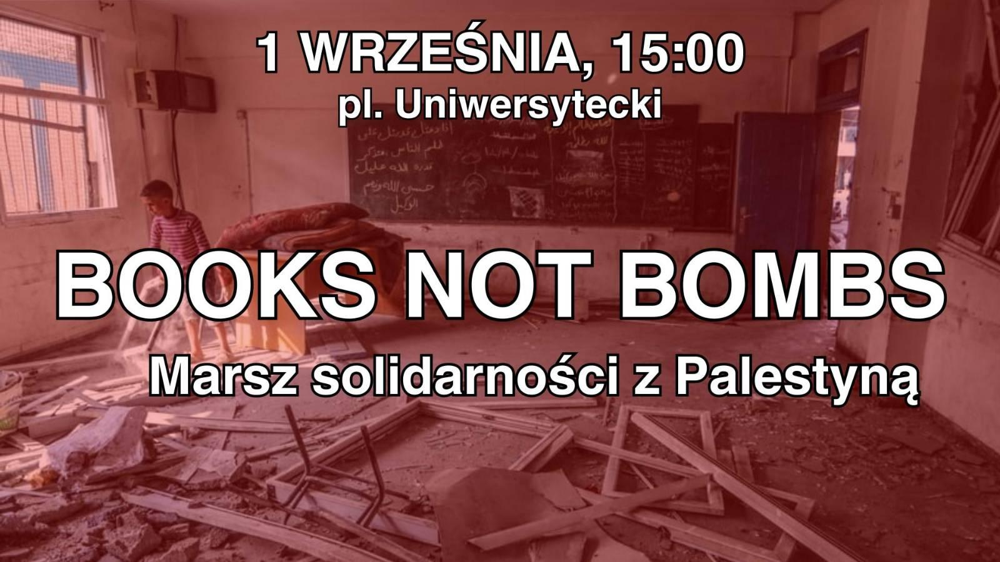

Wydarzenia
Poniedziałek 26.08
Spotkanie autorskie z Emilią Konwerską
Wtorek 27.08
Dyskusje czytelnicze – “Kingdom of Olives and Ash”
Czwartek 29.08
Lekcja arabskiego
Piątek 30.08
Projekcja filmu z prelekcją i dyskusją – “Recollection” (2015) dir. Kamal Aljafari
‼️ Niedziela 01.09 ‼️
Książki Zamiast Bomb – Marsz solidarności z Palestyną